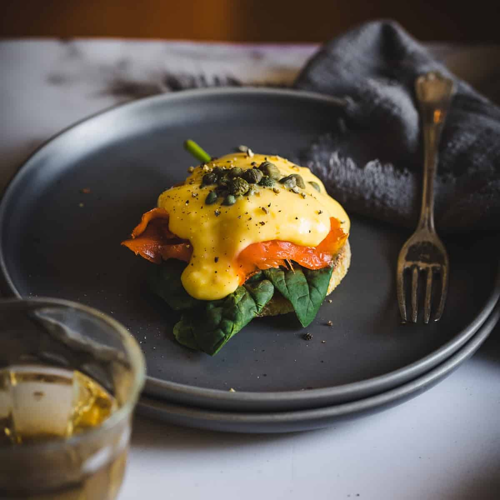

ingridients
- 2 English muffins
- 4 large eggs
- 4 slices Canadian bacon
- Vinegar, just a splash
-
For the Hollandaise sauce:
- 4 Tablespoons butter
- 4 egg yolks
- 2 teaspoons lemon juice, or lime juice
- 1 Tablespoon heavy whipping cream
- Salt and pepper (to taste)
instructions
-
For the Hollandaise sauce:
- Melt the butter in a small saucepan. In a separate small bowl, beat the egg yolks. Mix in lemon juice, whipping cream, and salt and pepper.
- Add a small spoonful of the hot melted butter to the egg mixture and stir well. Repeat this process, adding a spoonful at a time of hot butter to the egg mixture. (Adding the butter slowly, a spoonful at a time, will temper the eggs and ensure they don't curdle).
- Once the butter has been incorporated, pour the mixture back into the saucepan. Cook on low heat, stirring constantly, for just 20-30 seconds. Remove from heat and set aside. It will thicken as it cools. Stir well and add another splash of cream, if needed, to thin.
-
For the poached eggs:
- Fill a medium-size pot with about 3 inches of water. Bring the water to a boil and then reduce heat until it reaches a simmer. You should see small bubbles coming to the surface but not rolling.
- Add a little splash of vinegar to the water (this is optional, but it helps the egg white to stay together once it is in the water).
- Crack one egg into a small cup (I use a measuring cup). Lower the egg into the simmer water, gently easing it out of the cup.
- Cook the egg in simmering water for 3-5 minutes, depending on how soft you want your egg yolk. Remove the poached egg with a slotted spoon.
- It is not abnormal for a white foam to form on top of the water when poaching an egg. You can simply skim the foam off of the water with a spoon.
- While the egg is cooking, place the slices of Canadian bacon in a large pan and cook on medium-high heat for about 1 minute on each side.
-
To Assemble:
- Toast the English muffin. Top each toasted side with a slice or two of Canadian bacon, and then a poached egg. Top with hollandaise sauce.